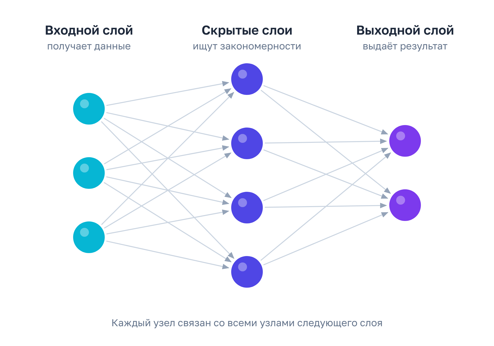

Нейросеть и искусственные нейроны
Что такое искусственный нейрон, чем он отличается от нейросети и как устроена основная структура сети.
В чём различие: нейрон и нейросеть
Представьте нейрон как одну маленькую кнопку: вы нажимаете на неё (вход), она «решает» — да или нет (активация) — и передаёт сигнал дальше (выход).
А нейросеть — это целая комната, где таких кнопок тысячи, и они соединены между собой. Сигнал бежит от одной кнопки к другой, на каждом этапе что-то «решается», и в конце комната выдаёт ответ — например, «на фото кот» или «это спам».
Одна кнопка сама по себе почти ничего не умеет. А вот когда их много и они связаны — получается «мозг», который учится и распознаёт.
Основная структура сети
- Входной слой — принимает данные извне (в виде чисел) и передаёт их дальше. Сам он почти ничего не вычисляет: основная работа начинается в следующих слоях.
- Скрытые слои (один или несколько) — главная часть сети. Именно здесь происходят распознавание и обработка данных. Обычно чем больше скрытых слоёв, тем более сложные закономерности сеть способна уловить, но лучше она работает не всегда: слишком большая сеть может «зазубривать» примеры.
- Выходной слой — выдаёт финальный результат. Ранее поступившая информация собирается в единый пазл, поэтому пользователь получает ответ на вопрос, отрисованное изображение или проверенный текст.

Ключевые понятия
Несколько терминов, которые пригодятся дальше:
- Слои — группы узлов, объединённые по этапу обработки: входной, скрытый, выходной.
- Узлы (нейроны) — отдельные вычислительные элементы сети (на схеме это круги).
- Веса связей — числовые коэффициенты при связях между узлами (на схеме это стрелки); определяют силу влияния входа на выход.
- Смещение (иногда его неточно называют «весом узла») — своеобразный порог: насколько легко этому нейрону «сработать». Нейрон суммирует все входы, умноженные на веса связей, прибавляет смещение и решает, передавать ли сигнал дальше.
Аналогия и пример
Попробуйте сами: нейрон-«гулялка»
Один нейрон решает, идти ли гулять. Галочки — это входы (условие есть или нет), ползунки «важность» — веса связей, а «личная планка» — смещение.
Идти ли гулять?
Проверьте себя
1. Что такое вес связи?
Вес показывает силу влияния сигнала: чем он больше, тем сильнее вход «давит» на нейрон.
2. Что делает входной слой?
Входной слой только принимает данные в виде чисел; вычисления идут в следующих слоях.
3. Смещение — это…
Смещение определяет, насколько легко нейрону «сработать».